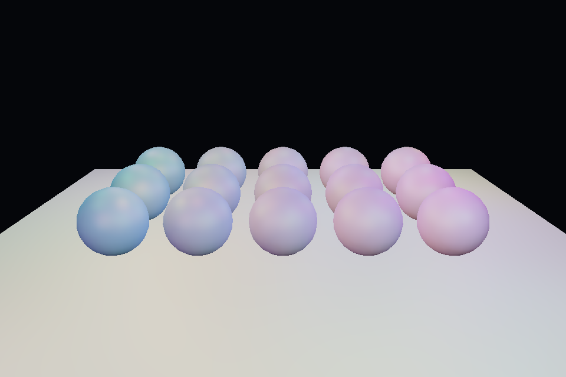

第 27 课：SSAO 与降噪
本课独立工程与关键注释
main.cpp · 本地辅助实现 · 本课着色器 · CMakeLists.txt
本目录拥有完整课程源码、资源与依赖配方。关键步骤含中文注释，不链接其他课的课程实现。可将整个目录复制到其他位置，用以下命令单独构建和检查；第三方依赖首次配置需要联网或提供缓存。
cmake -S . -B build -A x64
cmake --build build --config Debug --parallel 4
ctest --test-dir build -C Debug --output-on-failure
课程首页 · 上一课 · 下一课
目标与运行
cmake --preset opengl
cmake --build --preset opengl-debug --target 27_ssao --parallel 4
.\OpenGL\build\bin\Debug\27_ssao.exe
预期画面：球与地面接触附近有环境遮蔽；空格关闭，按 1 查看 AO，按 2 查看法线。
相机：W/A/S/D 移动，Q/E 升降，按住右键转向，Esc 退出。
代码阅读顺序
ssao.frag → ao_blur.frag → deferred.frag 的环境项
从本课 main.cpp 进入；公共工具在 common，GLSL 在 shaders。先画出每一遍读什么、写什么，再逐个展开辅助类。
原理与实现
SSAO 从屏幕空间近似表面附近的遮挡。对每个观察空间位置，在法线半球取 32 个样本；样本转到观察空间后投影到屏幕，读取附近已渲染的位置深度，判断是否存在更靠近相机的表面阻挡。
观察空间相机朝 -Z，看得见的表面 z 通常为负；比较方向不能套用普通正距离直觉。此例当 neighbor.z >= samplePos.z+bias 时认为阻挡，并用 range smoothstep 降低深度差太大导致的假遮挡。采样超屏和无几何处跳过。
4×4 的随机旋转噪声减少固定采样方向条纹；kernel 用确定种子构造，并偏向近处。随后进行空间、法线、深度共同决定权重的双边滤波，减轻噪声而尽量不跨物体边界糊开。最终只调制环境项，保留直接灯光。
SSAO 不知道屏幕外和被遮住的几何，边缘漏光、相机相关变化与大尺度失真都属于近似的局限。没有时域累积、半分辨率重建、GTAO/HBAO 等改进。本例只实现可读的基础版本。
修改练习
改变半径 .8 与 bias .03；暂时关闭降噪；扩大 kernel，观察质量和 GPU 成本。
修改后重新执行 cmake --build --preset opengl-debug --target 27_ssao --parallel 4。GLSL、模型、图片会复制到程序旁的 shaders/assets 目录。源文件应修改教程根目录下的版本，运行目录的副本会被下一次构建覆盖。
自测与参考答案
为什么环境遮蔽不应把所有直接光一起压暗？
屏幕 AO 近似环境方向遮挡，明确灯光的可见性通常应由阴影来决定。
检查与排错
运行 27_ssao.exe --smoke 可执行确定时间的四帧渲染检查。重要技术开关还可用 --smoke --variant --capture 与默认抓图对比。共享工具会检查 GL 错误、非背景像素和图像动态范围，但这不能代替人工核对技术含义。参见 进阶排错。
参考截图
以下为课程自带素材、固定时间 1 秒时的实际渲染；你的相机与操作改变后画面会不同。

查看按住空格时的对照图
深入学习：数据、接口与执行
先检查 G-buffer 的有效标记和视空间数据，再看半球样本、噪声旋转与几何引导降噪。AO 影响环境项；黑色轮廓也可能来自错误位置或无效背景样本。
配套精讲：三 API 对照 · 阴影、SSAO 与后处理。先读概念与参数选择，再返回本课实现核对，不必一次展开所有公共类。
本课的真实源码切片
来自 OpenGL/lessons/27_ssao/main.cpp，第 7—32 行；这是现有实现的局部摘录，末尾可能处于函数中间，不是可单独编译的完整程序。
int main(int argc, char** argv) try {
// 先创建上下文；它必须比 shader、纹理和网格活得更久。
App app(argc, argv, "27_ssao - OpenGL Course");
RenderTarget gbuffer(3), occlusion, filtered;
Shader geometry(app, "advanced.vert", "gbuffer.frag"),
lighting(app, "screen.vert", "deferred.frag"), ao(app, "screen.vert", "ssao.frag"),
blur(app, "screen.vert", "ao_blur.frag");
Mesh box(cube()), ball(sphere(24, 12)), plane(quad(), quadIndices());
Camera camera;
camera.pos = {0, 3, 8};
camera.pitch = -18;
// 固定随机种子生成朝向法线半球的样本，靠近原点的样本更密集。
std::mt19937 random(42);
std::uniform_real_distribution<float> unit(0, 1);
std::vector<glm::vec3> kernel, noise;
for (int k = 0; k < 32; ++k) {
auto p =
glm::normalize(glm::vec3(unit(random) * 2 - 1, unit(random) * 2 - 1, unit(random)));
p *= unit(random);
float f = float(k) / 31;
p *= .1f + .9f * f * f;
kernel.push_back(p);
}
for (int k = 0; k < 16; ++k)
noise.emplace_back(unit(random) * 2 - 1, unit(random) * 2 - 1, 0);
同主题跨 API 导航
以下是同主题参考；场景、功能完成度和版本基线可能不同，具体边界见对照章节。
先预测，再验证
为什么普通模糊会把遮挡涂到邻近背景？
参考推导：它不区分几何边缘。结合位置/法线权重可降低跨表面混合，但仍是屏幕空间近似。
在一次实验中只改一个因素，记录预测、实际画面/日志和原因。检查已有 smoke 是否仍通过；图形调试器里再核对本次 draw 的实际输入/输出，不能仅凭进程正常退出下结论。